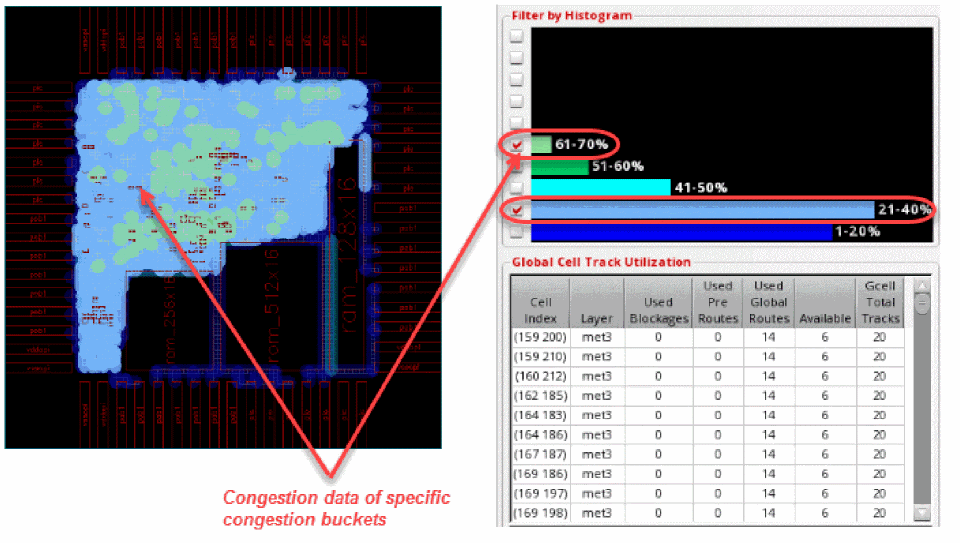
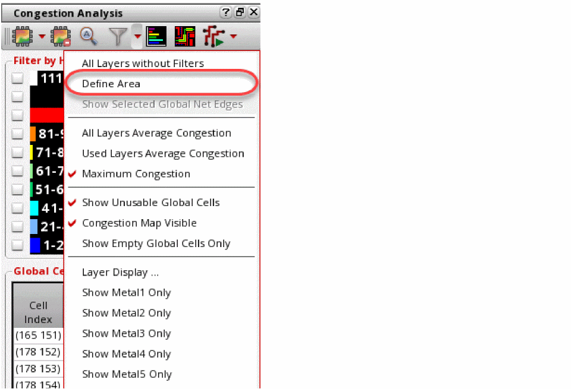

8
Running Congestion Analysis (ICADVM20.1 EXL Only)
Congestion analysis determines the routing capacity of a design. You can run congestion analysis both on globally routed and detail-routed designs. The level of congestion in a design can be represented graphically using a heat map, statistically using a histogram, or by using the routing metrics table that the global routing engine internally uses to map capacity and plan routing.
To simplify the initial problem, the global router creates a course grid that is a multiple of the average of the pitch or routing track grid for the various layers being routed. This course grid is known as the gcell grid. The congestion for every gcell grid is then calculated as the ratio between the number of routed wires and blockages versus the number of available routing tracks.
The Congestion Analysis utility lets you run comprehensive checks and ensure that accurate results are extracted and displayed. It also lets you view and analyze the routing density of a design from initial floorplanning to detailed placement and routing. This data is used to streamline the floorplanning task and let you tune global planning to improve routing convergence, and perform congestion-based pin optimization.
This chapter describes how to run, view, and analyze congestion analysis and covers the following topics:
- Setting up the Congestion Analysis Environment
- Displaying the Congestion Analysis Assistant
- Using the Congestion Analysis Assistant
- Tasks in the Congestion Analysis Assistant
- Using Global Bias Constraints
- About Scenic Ratio
Setting up the Congestion Analysis Environment
There are no specific settings required to perform congestion analysis. However, it would help to note the following important points:
-
Ensure that Default Wire Constraint Group is set to
LEFDefaultRouteSpec. This is required because the global router requires a default constraint group where bothvalidRoutingLayersandvalidRoutingViasconstraints are set. - Ensure that Design Style in the Virtuoso Space-based Router form is either selected as Chip Assembly or ASIC.
-
Ensure that the Route Flow in the Wire Assistant is selected as Minimum Spanning Tree. Congestion analysis only supports the Minimum Span Tree routing flow.
Displaying the Congestion Analysis Assistant
The Congestion Analysis assistant is available only in Layout EXL.
To display the Congestion Analysis assistant, do one of the following:
- Choose Window – Assistants – Congestion Analysis.
- Right-click anywhere in the layout window menu bar and choose Assistants – Congestion Analysis.
- Click the Congestion Analysis icon on the Design Planning toolbar. For more information, see
To hide the Congestion Analysis assistant, do one of the following:
- Click the Hide button in the Congestion Analysis title bar.
- Right-click anywhere in the layout window menu bar and choose Assistants – Congestion Analysis.
The Congestion Analysis user interface has five major components, as shown below.
- Title Bar Buttons
- Toolbar
- Customizable Histogram
- Global Cell Track Utilization Table
- Net Selection Table
Title Bar Buttons
-
Help
Displays information about how to use the Congestion Analysis assistant. -
Float/Dock
Undocks the Congestion Analysis assistant. Click the button again to dock the Congestion Analysis assistant. -
Hide
Hides the Congestion Analysis assistant.
Toolbar
The Congestion Analysis assistant toolbar lets you access the main functions with a single mouse click.

-
Analyze Congestion
Runs different methods of congestion analysis on the design. -
Clear Congestion Analysis Data
Clears the congestion analysis results and removes global routing. -
Zoom Selected Global Cells

Enables you to zoom to selected global cells or nets. -
Filter Global Cells by
Provides options to filter and display congestion data.Command Lets you... Lets you draw a box in the main window to filter an area of the design to display congestion analysis. The heat map, histogram, and global cell track utilization table are updated to only show the congestion data within the defined area.
Highlights the selected nets in the heat map. Also, the histogram and the global cell track utilization table are updated to show the congestion data of only the selected nets.
Calculates the average congestion for all horizontal and vertical layers in a design.
Calculates the average congestion for only the horizontal or vertical layers that have been routed in a design.
Calculates the maximum congestion for all horizontal and vertical layers in a design. This is the default congestion analysis mode.
Enables the display of the global cells that are blocked and are essentially not available for any global paths or interactive routing.
Turns on or off the display of the existing congestion map. For more information, see Toggling Congestion Map Visibility.
Displays all gcells that have zero congestion in the heat map and histogram. For more information, see Displaying Empty Global Cells.
Lets you choose specific layers when calculating and displaying congestion in the heat map, histogram, and global cell track utilization table.
-
Congestion Histogram Customize
Enables you to filter the histogram to display specific buckets of congestion. -
Global Bias Setup
Allows you to create, modify, and delete global bias constraints that can be used to plan the routing of a net group. -
Finish with Detailed Routing
Starts Virtuoso Space-based Router to complete detailed routing of the selected set of nets or the entire design.Command Lets you... Routes only the selected nets using the standard VSR routing flow.
Customizable Histogram
Running congestion analysis displays the congestion data in the histogram. The histogram illustrates the congestion results in the design based on the selected filter option.

Global Cell Track Utilization Table
Running congestion analysis populates the Global Cell Track Utilization table with the capacity and availability information of every gcell in the design.
Net Selection Table
After running congestion analysis, when you select a gcell in the Global Cell Track Utilization table, the nets passing through the selected gcell are displayed in a table below the Global Cell Track Utilization table. This table is the Net selection table.
Loading Congestion Analysis Workspace
To load the Congestion Analysis workspace and the assistant, choose Windows – Workspace – Congestion Analysis. The workspace displays the Navigator assistant, Palette assistant, and the Congestion Analysis assistant.
Using the Congestion Analysis Assistant
By using the Congestion Analysis assistant, you can run global routing and congestion analysis and illustrate the various methods of viewing congestion in your design. You can perform the following tasks.
Monaco Congestion Analysis Assistant has only one record per cellview. If you attempt to open another instance of Monaco Congestion Analysis Assistant for the cellview that already has a copy of congestion analysis record, a warning message is displayed, as shown below.

This also means that you should only open the Congestion Analysis assistant in one window. The copied one(s) only will display the synchronized heat map, but the Congestion Analysis assistant is not displayed.
Running Global Routing and Congestion Analysis
Before visualizing the congestion data, run global routing and congestion analysis on the design data. To do this:
-
Click the Congestion Analysis icon. It is the first icon on the Congestion Analysis assistant toolbar.
The Global routing and congestion analysis is run on the design. You can refer to the status and the results of congestion analysis in CIW or review the data from the log.
The global router builds the gcell grid and then runs four passes of global routing in an attempt to route all the nets. Once routing is complete, you can see the number of routes passing through every gcell edge in the design. This information is then used to calculate the availability of each gcell, and illustrate the availability of a gcell as a color on the heat map. The following figure shows the congestion results displayed in the heat map and the histogram in the Congestion Analysis assistant.
When you modify an object in the design, such as a block, cell, soft block, or change the shape or placement of the virtual hierarchy, the data in the Congestion Analysis assistant is in an invalid state. In this state, a warning message is displayed informing you that the congestion analysis data is no longer valid because some of the routing objects have been modified.*WARNING* (IA-20500): The congestion analysis data is no longer valid because some of the routing objects have been modified. Click the Run Congestion Analysis button on the toolbar to regenerate the congestion data or click the Clear Congestion Analysis Data button on the toolbar to clear the congestion map.
In addition, histogram, Global Cell Track Utilization table and some of the congestion analysis assistant tool bar options are disabled.
In the Congestion Analysis toolbar only the first two options, Congestion Analyze and Clear Congestion Analysis Data are enabled.To get the valid data and the state, you need to re-run congestion analysis. Once congestion analysis is run again, histogram, Global Cell Track Utilization table and the toolbar options are enabled and restored. -
To clear the analysis results and delete global routing, click the Clear Congestion Analysis Data icon on the toolbar.

Visualizing Congestion
Once global routing and congestion analysis is run, there are various methods to view congestion in your design. This section describes some of the methods to view congestion.
Viewing the Heat Map
The heat map is a standard method to visualize congestion. After global routing and congestion analysis is complete, the heat map is updated to illustrate the congestion result in the main window.
You can use the heat map to visualize and analyze congestion in your design. The heat map shows the level of congestion in different colors. The indication of the different color codes is as given below.
- Cold colors, such as Blue and Green indicate less congestion.
- Warmer colors, such as Yellow, Orange, and Red indicate high congestion.
- Hot colors, such as Purple and white indicate over congestion.
The following figure shows the congestion result in the heat map.

Since the colors displayed in the heat map are mostly blue and green in color, it indicates that the design is less congested.
Viewing the Histogram
Another method to view and analyze congestion in your design is using the histogram section in the Congestion Analysis assistant. The histogram provides instant feedback and displays the amount of congestion in a design. It is used for two purposes:
- Display the color palette for the heat map.
-
Display the congestion curve in the design.
The length of the color bar in each percentage bucket represents the number of gcells (as a ratio of the entire design) that have a particular level of congestion.
The following figure shows an example of a design that is less congested. Most of the gcells are present in the 1-20% and 21-40% buckets. Therefore, there are lots of available tracks throughout the design.

Here is another example that shows the over-congested design. Most of the gcells are contained in the upper buckets, which means that less routing resources are available.
Understanding Gcells
Global Routing generates a grid of global cells (known as gcells) in the design. The size of a global cell on a given layer is a multiple of the track pitch of that same layer. To calculate congestion, use the number of tracks that cross a gcell edge. This means:
- the capacity of a gcell edge is the total number of tracks that cross that edge.
- The availability of a gcell edge is the capacity minus the number of tracks already used on that edge.
To know the horizontal capacity of a gcell from the following figure, review the left-hand edges of the three highlighted gcells.
- Gcell #1 (in Purple) has a horizontal capacity of three tracks but has 0 tracks available (0% free)
- Gcell #2 (in Yellow) has a horizontal capacity of three tracks and has one track available (33% free)
-
Gcell #3 (in Green) has a horizontal capacity of three tracks and has two tracks available (66% free)

Viewing the Global Cell Track Utilization Table
When global routing and congestion analysis is run, the global cell track utilization table is populated with the capacity and availability information of every gcell in the design. It is an effective and informative arrangement to quickly view the gcell information.
- Horizontal congestion for the track utilization table is calculated using the track capacity and track availability data along the LEFT edge of a gcell.
- Vertical congestion for the track utilization table is calculated using the track capacity and track availability data along the BOTTOM edge of a gcell.
The following figure displays how the information is displayed in the Global Cell Track Utilization table.
The Global Cell Track Utilization table consists of seven columns, which are as follows:
-
Cell Index
An internal numbering system for all the gcells in a design. -
Layer
A layer of the gcell for which the track utilization data is displayed. -
Used Blockages
The number of tracks used by blockages for the specified layer of the gcell. -
Used Pre Routes
The number of tracks used by pre-routed nets for the specified layer of the gcell. -
Used Global Routes
The number of tracks used by globally routed nets for the specified layer of the gcell. -
Available
The number of tracks that are not used for the specified layer of the gcell. The information in this column is based on a simple calculation.Available = Gcell Total Tracks – Used Blockages – Used Pre Routes – Used Global Routes
-
Gcell Total Tracks
The total number of tracks for the specified layer of the gcell.
Analyzing Congestion
Let us now see how you can use the heat map, the histogram, and global cell track utilization table to analyze congestion, quickly debug hot spots, and find nets that pass through congested regions of the design.
Filtering by Analysis Modes
Usually, the average congestion across all layers in the design is displayed on the heat map. However, this can be misleading. To correctly analyze the congestion across all layers and display it on the heat map, you can change the analysis mode. To do this:
- Click the drop-down arrow next to the Filter Global Cells by icon on the Congestion Analysis toolbar.
-
Choose the analysis mode from the drop-down list box, as shown in the following figure.
The three different analysis modes to view congestion on the heat map are:-
All Layers Average Congestion
For each gcell, calculates the average congestion for all horizontal and vertical layers, and colors the gcell based on the average computed percentage. -
Used Layers Average Congestion
For each gcell, calculates the average congestion for all horizontal and vertical layers that have global routing, and colors the gcell based on the average computed percentage. -
Maximum Congestion
For each gcell, calculates the maximum congested percentage for all horizontal and vertical layers, and colors the gcell based on the maximum congested percentage. This is the default analysis mode.
You can view variations in the congestion data in the heat map, the histogram, and the global cell track utilization table. The view in the heat map, histogram, and the global cell track utilization table changes to display the variation in congestion data when you switch between the three analysis modes.
-
All Layers Average Congestion
Filtering by Layers
You can quickly view congestion results either in the heat map or the histogram by filtering the results by layer. The two ways to do this are as follows.
Selecting a Single Layer
- Click the drop-down arrow next to the Filter Global Cells by icon on the Congestion Analysis toolbar.
-
Choose a layer for which you want to view congestion. For example, select Show met2 Only from the drop-down list.
The following figure displays the congestion data of the selected layer in the heat map, histogram, and the global cell track utilization table.
The view in heat map, histogram, and the global cell track utilization table changes to display the variation in the congestion data depending on the metal layer selected.
When the layer filter is set to a single layer, the color of the filter icon is changed from Grey to light orange. The tooltip is also updated according to the filter applied.
Selecting Multiple Layers
- Click the drop-down arrow next to the Filter Global Cells by icon on the Congestion Analysis toolbar.
-
Click the Layer Display option.
The Layer Display form is displayed. Using this form, you can choose multiple layers for which you want to display congestion.
- Choose the layers for which you want to display the congestion data. You can choose:
-
Click OK.
The following figure displays the congestion data for only the horizontal layers.
The view in the heat map, histogram, and the global cell track utilization table changes to display the variation in the congestion data depending on the metal layers selected.
Related Topics
Filtering by Histogram
Another method to view congestion results is to filter the histogram. This method helps in viewing specific buckets of congestion on the heat map. To filter the histogram, perform the following steps:
- Run congestion analysis.
-
Select the check box next to the congestion bucket that you want to display on the heat map. You can switch between the different congestion buckets that are available.
The following figures displays the gcells and their congestion between61-70%and21-40%.
The view in the heat map, histogram, and the global cell track utilization table changes to display the variation in the congestion data depending on the congestion bucket selected.
Tasks in the Congestion Analysis Assistant
By using the Congestion Analysis assistant, you can perform the following tasks.
- Customizing Histogram
- Selecting and Viewing Global Cells
- Toggling Congestion Map Visibility
- Displaying Empty Global Cells
- Finding and Displaying Nets
- Resetting the Histogram and Heat Map Display
Customizing Histogram
At times it may become necessary to customize the histogram. Let us consider a scenario when you run global routing and congestion analysis and most of the design is congested. However, there are some very small regions of high congestion. The following figure displays the histogram with small regions of high congestion.

Because there are small bands of high congestion, it is difficult to know the number of gcells that are in the 111-200% bucket compared to the ones in the 91-100% bucket. Also, it is difficult to know the number of gcells that are 95% congested compared to ones that are 98% congested.
In such a scenario, customizing the histogram will be beneficial. You can customize the histogram to only display the congested buckets and expand them to the entire histogram table. To do this:
-
Click the Congestion Histogram Customize icon on the Congestion Analysis toolbar.
The Congestion Histogram Customize form is displayed.

-
From the Customize As drop-down list, select the method by which you want to customize the histogram. You can choose from the following:
- Choose Default to customize the histogram and display the congestion data in the original format.
- Choose Interval to specify the congestion percentage with which to start and the interval between congestion buckets. For more information, see Customized as Interval.
- Choose Start and End to specify the congestion percentage with which to start and end on. The intervals between congestion buckets are derived automatically. For more information, see Customized as Start and End.
- Choose Specified to specify the exact congestion percentage buckets. The start percentage for each congestion bucket is manually entered. For more information, see Customized as Specified.
To view the results based on histogram customization, see Results Based on Histogram Customization. - In the Start at field, specify the congestion percentage with which to start. This field is enabled only when the customization method is selected as Interval or Start and End.
- In the End at field, specify the congestion percentage on which you want to end. This field is enabled only when the customization method is selected as Start and End.
- In the With Interval field, specify the interval between the congestion buckets. This field is enabled only when the customization method is selected as Interval.
- Click Refresh. The table entries in the Congestion Histogram Customize form are updated.
- Click OK. The congestion data displayed in the heat map, the histogram, and the global cell track utilization table is updated based on the selected customization method and the related settings.
Related Topics
Congestion Histogram Customize
Results Based on Histogram Customization
The congestion data result is created and displayed based on the histogram customization. Let us see how the result of congestion data differs in three different methods of histogram customization.
Customized as Interval
The Interval option lets you specify the congestion percentage to start and the interval between the congestion buckets.
The following figure shows an example where the histogram starts at the 40% value with an interval of 5% in each bucket. The histogram is updated to only display congestion data for the upper buckets. As can be seen, most of the congestion is in the 40-44% bucket.

Now, click the check box next to the 65-69% bucket. The gcells in this bucket are highlighted in the heat map and the global cell track utilization table.

Customized as Start and End
The Start and End option lets you specify the congestion percentage to start and the congestion percentage to end. The intervals between congestion buckets are derived automatically.
The following figure shows an example where the percentage to start is specified as 1% and the percentage to end is specified as 110%. The interval for each bucket is automatically set to 10%. The histogram is updated to only display congestion data for the specified buckets that were selected in the customization form. As can be seen, most of the congestion is in the 12-22% bucket.
Now, click the check box next to the 56-66% bucket. The gcells in this bucket are highlighted in the heat map and the global cell track utilization table.
Customized as Specified
The Specified lets you specify the exact congestion percentage. The start percentage for each bucket has to be individually specified.
The following figure shows an example where the percentage to start the histogram is specified as 9%, the next congestion bucket starts at 19%, the one after that at 29%, and so on.

The congestion between 9-99% is now visible in the histogram. As can be seen, most of the congestion is in the 19-28% bucket. Also, there is hidden congestion in the 117-200% bucket.
Now, click the check box next to the 49-58% bucket to highlight the congested hot spots on the heat map and debug why the gcells are so congested by reviewing the global cell track utilization table.

Selecting and Viewing Global Cells
With the help of the global cell track utilization table, you can view the actual congestion metrics used by the global routing engine.
You can use the global cell track utilization table to quickly find the most congested gcells in the design. In addition, explore the objects causing that level of congestion and also view the selected gcell(s) in the heat map by zooming in.
- Run congestion analysis by clicking the Congestion Analysis icon on the toolbar.
-
Select a gcell from the Global Cell Track Utilization table.
The nets passing through the selected gcell are displayed in the section below the Global Cell Track Utilization table. The heat map is also updated to show the location of the selected gcell. However the selected gcell, in the Global Track Utilization table, appears quite small on the heat map because of the design size. -
To view the selected gcell more precisely, use the Zoom selected Global Cells icon on the Congestion Analysis toolbar.
The following figure shows the enlarged view of the selected gcell in the heat map.
Congestion is calculated based on the capacity and availability of edges on a gcell.
An alternative way to select and view a gcell is using the heat map. You can look for the gcells in the heat map and then manually select the gcells that are required. To do this:
- Click the drop-down arrow next to the Filter Global Cells By icon on the Congestion Analysis toolbar.
-
To select an area of gcells, click Define Area.
 -
Now, select a region on the heat map by clicking a lower-left point and then dragging the pointer to an upper-right point.
Sorting Global Cell Track Utilization Table
To assist in the analysis of congestion analysis, you can sort each column in the Global Cell Track Utilization table. To do this, click the header of the column to be sorted.
To reverse the sorting of the column, double-click the column.
In the following figure, the Available column in the Global Cell Track Utilization table is sorted in descending order. The triangle on the column name represents whether the sorted column is ascending or descending order.
Toggling Congestion Map Visibility
Sometimes, the heat map may obscure other important design information in the main window. In such a situation, you can toggle the display of the heat map in the main window. To do this:
- Click the Filter button from the Congestion Analysis toolbar.
-
Click the Congestion Map Visible option from the drop-down list.
The display of congestion map is turned off and the congestion map is no longer displayed.
Displaying Empty Global Cells
At times, it is useful to visualize parts of a design that have zero percent congestion. This can help in identifying regions that could be used to add additional structures such as hard macros, soft blocks, or routing. Alternatively, this can help to identify regions in a design that could be removed or compacted in order to shrink a design during floor-planning. To only show gcells with zero percent congestion, perform the following steps.
- Click the Filter button from the Congestion Analysis toolbar.
-
Click the Show Empty Global Cells Only option from the drop-down list.
The heat map is turned off and only global cells with zero congestion are displayed in the main window.
Finding and Displaying Nets
To know where congestion hot spots exist, it is important to identify the nets passing through congested regions of a design so that corrective action can be taken. This section describes how to:
To find and display the nets that are passing through a gcell, perform the following steps.
- Run congestion analysis by clicking the Congestion Analysis icon on the toolbar.
- Select a gcell in the Global Cell Track Utilization table.
-
Select a net from the table of nets displayed below the Global Cell Track Utilization table.
All the gcells that the selected net passes through are highlighted. The path displayed by the highlighted gcells is known as the global path. The global path of the selected gcells is seen on the heat map.

-
To view the path more closely, use the Zoom selected Global Cells icon on the Congestion Analysis toolbar.
-
Now, select a range of nets from the Net Selection table by clicking the start and end nets and keeping the
Shiftkey pressed. You can also select multiple nets from the table by clicking multiple nets and keeping theCtrlkey pressed.
When multiple nets are selected, the display of gcells for the selected nets look cluttered. This is because the heat map complicates the global paths of the selected nets.
The selection of nets is usually done from the Navigator assistant and is considered the primary way of displaying nets on the heat map. However, you can also select a net or a group of nets from the Net Selection table in the Congestion Analysis assistant and have the selected nets displayed in the Navigator assistant. -
To only show the congestion on gcells associated with the global paths of the selected nets, click the Show Selected Global Nets Edges option from the Filter drop-down list. The following figure shows how the congestion is displayed before the option is not selected and after the option is selected.
Finding and Displaying Nets in the Navigator
You can also select nets from the Navigator assistant and have them displayed in the heat map. To do this:
- Open the Navigator assistant in Virtuoso by choosing Windows – Assistant – Navigator.
-
Click and select the nets from the Navigator assistant.
The following figure shows the selected nets in the Navigator assistant and how they are displayed together in the heat map.
Resetting the Histogram and Heat Map Display
To reset the histogram and heat map to display every gcell, you need to reset the filtering. To do this:
- Click the Filter button from the Congestion Analysis toolbar.
-
Click the All Layers without filtering option from the drop-down list.
The following figure shows the congestion analysis results when the All Layers without filtering option is selected.
Using Global Bias Constraints
Visualizing and analyzing routing is not of much help if you are unable to make the changes to better suit the design. Congestion Analysis provides the support of global bias constraints, which can be used to plan routing. Once you have identified critical nets or groups of nets, you can add global bias constraints to manage and plan the routing path. These global bias constraints are persistent and are saved to OpenAccess.
This section describes various aspects of biasing and how to see the actual results by running ECO global routing and congestion analysis:
- Creating a Global Bias Positive Region Constraint (attract net group into a region)
- Creating a Global Bias Negative Region Constraint (repel net group out of a region)
- Creating a Global Bias Path Constraint (guide net group along a path)
- Creating Multiple Global Bias Constraints for Specific Layers
Creating a Global Bias Positive Region Constraint
You can consider the global bias positive region constraint as a magnet that can attract a group of nets and buses into a region during global routing. These biased nets take priority over the other nets that also pass through the same region. This means that the global router may push aside the other nets to ensure that the biased nets pass through the region successfully.
To create a global bias positive region, follow the steps:
- Select a net, group of nets, or a bus from the Navigator assistant. For example, here select the net port_pad_data_out<1> from the Navigator assistant.
-
Click the Global Bias Setup icon on the Congestion Analysis assistant toolbar.
The Global Bias Setup form displays.

-
Click the New button to create a new global bias constraint group.
The form is updated to create a default group named as GB002. Also, the net selected in the Navigator assistant appears in the Nets list.
You can add and remove the nets to the Global Bias Setup form.
To add nets:- Select a net or a group of nets from the Navigator assistant.
- Click the + From Navigator button in the Global Bias Setup form.
The nets selected in the Navigator assistant get displayed in the Nets list box.
To remove nets:
The selected net is removed from the Nets list box. -
You are allowed to rename the default global bias constraint name to a user-defined name. To edit the name, click in the Global Bias text field and specify another name.
- To add the positive bias region, click the + Rectangles button.
-
Click and drag to draw a region in the heat map.
The region created on the heat map is used as the coordinates for the bias area. The bias area is automatically assigned a name called vsrGlobalBias_AB_001 and is displayed in the Bias Areas list box. The Green symbol in the Bias column next to the bias area indicates that it is a positive bias.

-
If you have created an incorrect region, you can delete it. To do so:
The selected bias area is removed. -
To see how the new constraint alters routing and congestion, click the ECO button in the Global Bias Setup form. Alternatively, click Global Route and ECO Congestion Analysis option from the Congestion Analysis drop-down list.
 The ECO button in the Global Bias Setup form is enabled only when there is a valid global bias constraint.The following figure shows that the net is now attracted through the bias region and no longer takes the circuitous path.
The ECO button in the Global Bias Setup form is enabled only when there is a valid global bias constraint.The following figure shows that the net is now attracted through the bias region and no longer takes the circuitous path.

Related Topics
Creating a Global Bias Negative Region Constraint
Consider the global bias negative region constraint as a magnet that can repel a group of nets and buses out of a region during global routing. These biased nets take priority in being pushed out of a bias region by global routing. This can result in the biased nets becoming more circuitous. Another way to conceptualize the negative bias region is as a soft blockage for a selected set of nets.
To create a global bias negative region, perform the following steps:
- Select a net, group of nets, or a bus from the Navigator assistant. For example, select the net port_pad_data_out<1> from the Navigator assistant.
-
Click the Global Bias Setup icon on the Congestion Analysis assistant toolbar.
The Global Bias Setup form displays. -
Click the New button to create a new global bias constraint group.
The form is updated to create a default group named as GB002. Also, the net selected in the Navigator assistant appears in the Nets list box.
You can add and remove the nets to the Global Bias Setup form.
To add nets:- Select a net or a group of nets from the Navigator assistant.
- Click the + From Navigator button in the Global Bias Setup form.
The nets selected in the Navigator assistant are displayed in the Nets list box.
To remove nets:
The selected net is removed from the Nets list box. - To edit the global bias constraint group name, click in the Global Bias text field and specify another name.
- To add the negative bias region, click the + Rectangles button.
-
Click and drag to draw a region in the heat map.
The region created on the heat map is used as the coordinates for the Bias Area. The bias area is automatically assigned a name called vsrGlobalBias_AB_002 and is displayed in the Bias Areas list box. -
Click the green symbol in the Bias column next to the bias area. This displays a red —symbol, which indicates a negative bias.

-
If you have created an incorrect region, you can delete it. To do so:
The selected bias area is removed. -
To see how the new constraint alters routing and congestion, click the ECO button in the Global Bias Setup form or click the Global Route and ECO Congestion Analysis option from the Congestion Analysis drop-down list.
The following figure shows that the net is now repelled from the red bias region and can route freely.

Related Topics
Creating a Global Bias Path Constraint
You can use global bias path constraints to guide a net, group of nets, or a bus along a pre-designated path during global routing. These path-biased nets take priority over the other nets during global routing. This means that the global router may push other nets out of the way and make them less optimal in routing.
To create a global bias path constraint, follow the steps:
- Select a net, group of nets, or a bus from the Navigator assistant. For example, select the net m_digit_clk from the Navigator assistant.
-
Click the Global Bias Setup icon on the Congestion Analysis assistant toolbar.
The Global Bias Setup form displays. -
Click the New button to create a new global bias constraint group.
The form is updated to create a default group named as GB003. Also, the net selected in the Navigator assistant appears in the Nets list box.
You can add and remove the nets to or from the Global Bias Setup form.
To add nets:- Select a net or a group of nets from the Navigator assistant.
- Click the + From Navigator button in the Global Bias Setup form.
The nets selected in the Navigator assistant get displayed in the Nets list box.
To remove nets:
The selected net is removed. - To edit the global bias constraint group name, click in the Global Bias text field and specify another name.
- To add the path bias constraint, click the + Paths button.
-
Click and drag to draw a path that you want the net to take in the heat map.
The path created on the heat map is used as the coordinates for the bias path. The bias path is automatically assigned a name called vsrGlobalBias_AB_003 and is displayed in the Bias Areas list box.
If you have created an incorrect region, you can delete it. To do so: -
To see how the new constraint alters routing and congestion, click the ECO button in the Global Bias Setup form or click the Global Route and ECO Congestion Analysis option from the Congestion Analysis drop-down list.
The following figure shows that the net now follows the bias path constraint.

Related Topics
Creating Multiple Global Bias Constraints for Specific Layers
This section describes how to create a negative bias region constraint, create a bias path constraint on a specified set of layers and then run ECO global routing and congestion analysis.
- Select a net, group of nets, or a bus from the Navigator assistant. In this example, the net spi_data is selected from the Navigator assistant.
-
Click the Global Bias Setup icon on the Congestion Analysis assistant toolbar.
The Global Bias Setup form displays. -
Click the New button to create a new global bias constraint group.
The form is updated to create a default group named as GB004. Also, the net selected in the Navigator assistant appears in the Nets list box.
- To add the negative bias region, click the + Rectangles button.
-
Click and drag to draw a region in the heat map.
The region created on the heat map is used as the coordinates for the bias area. The bias area is automatically assigned a name called vsrGlobalBias_AB_004 and is displayed in the Bias Areas list box. -
To create a negative bias, click the green symbol in the Bias column next to the bias area. This displays a red — symbol, which indicates a negative bias.

- To add the bias path, click the + Paths button.
-
Click and drag to draw a path that you want the net to take in the heat map.
The path created on the heat map is used as the coordinates for the bias path. The bias path is automatically assigned a name called vsrGlobalBias_AB_005 and is displayed in the Bias Areas list box.

-
Now, let us assign specific layers for the bias path. To do so:
- In the Global Bias Setup form, click the vsrGlobalBias_AB_005 bias area. The - Selected Area and the Define Layers button are now enabled.
-
Click Define Layers.
The Bias Layers form displays.
-
Click the Specify option.
The list box listing the layer names is now enabled. -
Select met1 and met2 by from the list box by holding the
Shiftkey. This notifies the router that the global bias path must be completed only for the selected routing layers. -
Click Close.
The Global Bias Setup form is updated to reflect the layer constraints applied to thevsrGlobalBias_AB_005bias area.
-
To see how the new constraint alters routing and congestion, click the ECO button in the Global Bias Setup form or click the Global Route and ECO Congestion Analysis option from the Congestion Analysis drop-down list.
The following figure shows that the net has now been routed outside of the negative bias region and routed along the bias path.

Related Topics
About Scenic Ratio
The scenic ratio is used to determine how close the value is to the ideal route when comparing the route in isolation without any congestion penalties, versus the result when all nets are routed and congestion modifies the taken path. When the value of the scenic ratio is close to 1, it means that the global route is accurate. The nets on which congestion analysis is not run displays the value of the scenic ratio as 0.
Displaying Scenic Ratio
To view the value of the scenic ratio for a net:
- Click the Congestion Analysis icon to run congestion analysis.
- Choose Window – Assistants – Navigator Assistant.
-
Right-click a column header in the Navigator Assistant.
A drop-down menu is displayed.

-
Click Scenic Ratio from the drop-down list.
The Scenic Ratio column is displayed in the Navigator Assistant pane. This column displays the value of the scenic ratio for all nets in the design.
Sorting Scenic Ratio
You can sort the scenic ratio of nets in ascending or descending order. To sort the scenic ratio, click the Scenic Ratio column header. Clicking the column header the first time would display the scenic ratio of nets in the ascending order. This means that the net with the least value is displayed at the top of the table. When you click the column header the next time, the scenic ratio of nets is displayed in the descending order.

Modifying Scenic Ratio
You can modify the scenic ratio of a net by setting the global bias constraint on a net and then rerunning congestion analysis. For more information on how to set global bias, see Using Global Bias Constraints. When congestion analysis is rerun, the value of the scenic ratio may change for other nets as well.
Return to top